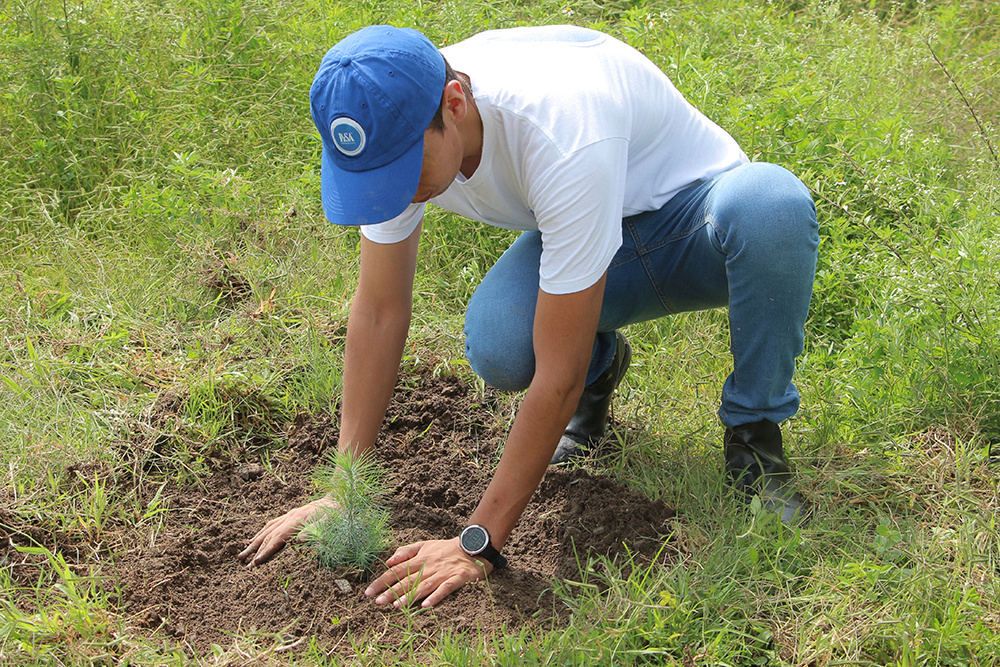

SOLUCIONES PARA EL CALENTAMIENTO GLOBAL
¿Por que debemos hacer algo?
El calentamiento global es uno de los desafíos más apremiantes de nuestro tiempo. Nuestra actividad humana, especialmente la quema de combustibles fósiles y la deforestación, está liberando grandes cantidades de gases de efecto invernadero a la atmósfera. Esto provoca un aumento en la temperatura del planeta, con consecuencias desastrosas como el derretimiento de los casquetes polares, el aumento del nivel del mar y fenómenos climáticos extremos. Al tomar medidas para combatir el calentamiento global, como reducir las emisiones de carbono y promover la energía renovable, no solo protegemos el medio ambiente, sino que también salvaguardamos la salud de las generaciones futuras, preservamos la biodiversidad y aseguramos la estabilidad económica y social. Es nuestro deber actuar ahora para mitigar este problema y construir un futuro sostenible para todos.
¿Qué podemos hacer?
Hay muchas cosas que podemos hacer por nuestro planeta y aqui en esta pagina te vamos a platicar de algunas de ellas como lo son:
-Apoyar la energía solar: Instalar paneles solares en hogares y negocios puede ayudar a reducir la dependencia de los combustibles fósiles y aprovechar una fuente de energía limpia y renovable.
-Promover la eficiencia energética: Adoptar medidas para reducir el consumo de energía en el hogar y en el trabajo, como mejorar el aislamiento, usar electrodomésticos eficientes y apagar los dispositivos electrónicos cuando no se estén utilizando, puede ayudar a reducir las emisiones de gases de efecto invernadero y ahorrar dinero.
-Promover el reciclaje: Este ayuda tanto para el ambiente como para que nuestra ciudad y planeta sean más limpias. El reciclaje ayuda a que no se cree nuevo plasticoi y de alguna forma no estemos produciendo más y más basura.
-Plantar arboles: Los arboles son de gran ayuda para la regeneracion de oxigeno limpio en nuestro planta, el plantar arboles a parte de que nos ayuda a tener más áreas verdes nos ayuda a limpiar el oxigeno para asi tener una mejor calidad de este y tambien al que no haga mucho calor debido al concreto que nos encontramos por tods lados.
Nuestro planeta, este hogar compartido que llamamos Tierra, nos brinda vida, belleza y recursos invaluables. Desde los majestuosos paisajes hasta la diversidad de vida que alberga, la Tierra es una obra maestra de la naturaleza que merece nuestro cuidado y respeto. Cada rincón de este vasto mundo cuenta una historia de conexión y armonía entre los seres vivos y su entorno. Sin embargo, en nuestra búsqueda de progreso y comodidad, hemos descuidado las señales de advertencia que el planeta nos envía. El cambio climático, la pérdida de biodiversidad y la contaminación son algunas de las heridas que hemos infligido a nuestra casa común. Pero aún hay esperanza. Tenemos la capacidad y la responsabilidad de proteger y preservar este precioso regalo para las generaciones futuras. Cada acción, grande o pequeña, que tomemos en favor de la sostenibilidad y la conservación es un paso hacia un futuro donde la Tierra continúe siendo un refugio para todas las formas de vida. Cuidar el planeta no es solo un deber, es un acto de amor hacia nosotros mismos, hacia los demás y hacia las generaciones venideras. Es hora de unirnos en un compromiso colectivo para proteger y restaurar nuestro hogar, porque en última instancia, al cuidar la Tierra, también nos estamos cuidando a nosotros mismos.
mapa de ubicación
los derehos reservados a FATIMA ZUÑIGA, ESMERALDA TENORIO, ISABEL VARGAS Y VARELA MIRANDA- COPYRIGHT © 2024